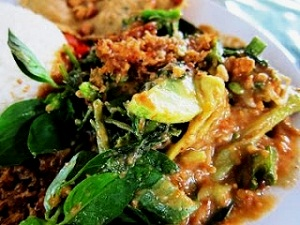

|
|
Cara Membuat Pecel Jawa
- Pertama-tama bumbu yang sudah dihaluskan campurkan dengan kacang tanah yang sudah dihaluskan , uleg atau aduk-aduk hingga tercampur rata .
- Kemudian tuangkan air panas dan larutan air asam jawa yang sudah anda siapkan tadi , aduk hingga tercampur rata dan larut , lalu sisihkan .
- Selanjutnya susun bahan pelengkap untuk setiap posi nya .
- Lalu tambahkan aneka sayuran yang sudah anda siapkan tadi .
- Siram dengan bumbu kacang , Resep Membuat Pecel Sayur Khas Jawa Enak siap dihidangkan.
Bahan
- Kacang panjang 5 utas ( rebus , potong-potong menurut selera anda )
- Tauge 100 gram ( seduh dengan air panas )
- Kol 5 lembar ( seduh dengan air panas )
- kuncup kembang turi 100 gram ( seduh dengan air panas )
- Bayam 1 ikat ( direbus )
- Daun pepaya 1 ikat ( direbus )
- Kenikir 5 utas ( dipotong dengan bentuk dan ukuruan menurut selera anda )
- Daun kemangi secukupnya
- Kacang tanah 250 gram ( goreng , lalu dihaluskan )
- Air panas 400 mililiter
- Larutan air asam jawa yang dibuat dari 0,5 sendok teh asam jawa dan 0,5 sendok makan air putih .
Bumbu Halus
- Cabai merah keriting 5 buah
- Cabai rawit 4 buah
- Bawang putih 3 siung
- Terasi 0,5 sendok teh ( dibakar terlebih dahulu )
- Garam secukupnya
- Gula merah ( disisir ) secukupnya
|

Video on Youtube
|